In this project, we worked on simulating light in a rendered scene. This centered around the idea of path tracing, where we shot rays out from the perspective of the camera and recorded how the rays bounced around the scene and transported
light. The first task focused on figuring out how to represent these rays. Given the camera location and direction of view in the scene, we mapped the screen coordinates to a sensor with height and width given by the field of view and
centered it at camera centric coordinates (0, 0, -1). Each screen coordinate now had a mapping to a ray in the scene, and we determined the color for a pixel via the radiance along that ray. To get a less noisy image, we also sampled multiple
times for each pixel.
For task two, we want to speed up ray intersection tests with objects/primitives in the scene. To do this, we use an acceleration structure called a bounding volume hierarchy. This effectively wraps primitives in the scene in bounding boxes
that progressively get larger and larger as they encompass more BVH nodes. Then, to test for intersection, we check if the ray intersects a particular bounding box and keep narrowing down in bounding box resolution until we hit the actual
primitive. The speed up comes from the fact that if there's no intersection at any of the steps along the way, we can end early and not test intersection for any of the primitives in the region.
For task three, we started actually simulating the light bouncing around the scene from light sources. First we focused on zero bounce lightiing in which the ray sampled for the coordinate intersects with a light source. Then, we considered
one bounce lighting where the ray intersected another object in the scene first and then intersected a light source. To sample the incoming ray direction, we used both uniform hemisphere sampling and light source importance sampling and found
that the importance sampling was very effective at reducing the noise in the final output.
For task four, we implemented indirect lighting aka global illumination. This involved recursively checking the radiance at each intersection that a ray could have had before hitting a light source. We set a max number of bounces, but also
used russian roulette to randomly terminate the ray bounces. This allowed us to have illumination from light bouncing in between objects and thus having colored shadows.
For task five, we optimized the process of sampling by focusing on sampling areas where the illuminace was converging slowly. If only a few samples were necessary to determine that a pixel's color was close to a certain value using confidence
intervals, then we could stop sampling early.
We encountered many challenges related to putting vectors in the right coordinate space. We also ran into issues with handling infinite recursion when all samples were on the same side during BVH because we weren't dynamically recalculating
the split point. Floating point division errors were also a bit of a headache for adaptive sampling. In general, we didn't have too many major bugs beyond just forgetting some small details like normalizing vectors.
Part 1: Ray Generation and Scene Intersection
In order to generate rays into the scene, we first need to figure out how to map from screen coordinates to sensor/image coordinates in the 3D world. To do that, we imagine the screen as if it were centered around the point (0, 0, -1) and
normalized such that the height was equal to the vertical field of view and the width was the horizontal field of view. Then, we have a unique mapping from pixel coordinates to sensor coordinates and can generate the ray as having origin (0,
0, 0) and direction d = sensor coordinates. We also want to limit the depth of intersection so we set a max and min distance.
Now that we know how to generate a ray for a particular screen coordinate, we determine radiance for a pixel by sampling rays uniformly within the pixel area and then averaging those samples. Since the pixel area is 1, then the Monte Carlo
estimate is just an average over the samples. This amounted to just adding a number from (0, 1) to the base pixel coordinates.
To determine the radiance from a ray, we need to determine which objects it intersects. For intersections with triangles, the general idea was to determine if the ray intersected the plane of the triangle and then check if the intersection
point was within the triangle. However, this was much more easily done using the Moller Trumbore algorithm from class that determined the barycentric coordinates as well as the t value of intersection. If all the barycentric coordinates were
greater than zero and summed to one and if the time of intersection was within the max and min for the ray, then it was a valid intersection.
For intersections with spheres, we again used the formulas derived in the lecture slides and simply verified that the discriminant was positive and that the times outputted were within bounds.
Once primitive intersection was determined, we updated the intersection information to record the surface normal, the bsdf, the t value, and the primitive, and we updated the ray max_t so that, in the future, it would only test for
intersections in front of this one. Calculating the surface normal for the sphere is easy as it's just the subtraction of the intersection and the sphere's origin and normalized; however, for the triangle, the surface normal is the
barycentric interpolated normal from the normal vectors of the vertices. This was also normalized.
We ran into challenges for this part mainly when converting screen coordinates to sensor coordinates since calculating the proper offsets and normalizing the resulting direction vector was easy to mess up or forget.
Normal shading examples
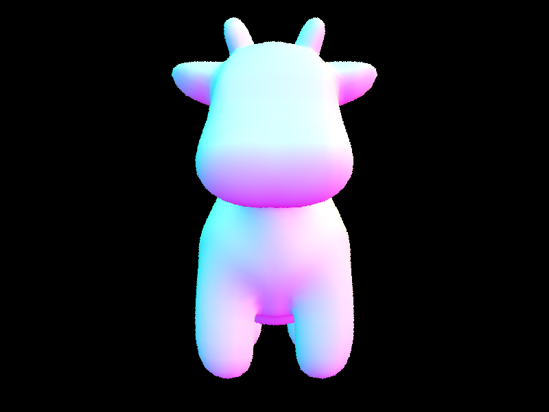
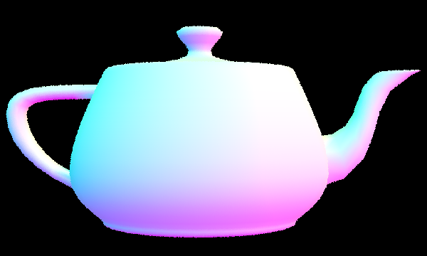
Part 2: Bounding Value Hierarchy
For our BVH construction algorithm, given that trees are recursive data structures, we recursively built our BVH. We began by making a bounding box around all the primitives in the scene. Then, if the bounding box contains less than or equal
to max leaf size primitives, then we make a new Node out of that bounding box and return. Otherwise, if the bounding box contains more than max leaf size primitives, we need to partition our primitives into two disjoint sets. As a heuristic,
we calculated the max extent axis of the bounding box and used the midpoint of that axis to partition each primitive to two disjoint sets. Using the std::partition function, it returns a pointer to the middle element that we can pass into the
recursive call. To handle the edge case where all the primitives lie on one side of the midpoint of the max extent axis (if start or end pointed at the same element as the pointer returned by std::partition), then we dynamically adjust the
lower and upper bound until we find a midpoint that doesn't have all primitives on one side. After that, we then recursively set the left and right pointer and pass in the left half to the first recursive call, then the right half to the
right recursive call.
Images with normal shading for a few large .dae files only with BVH acceleration.
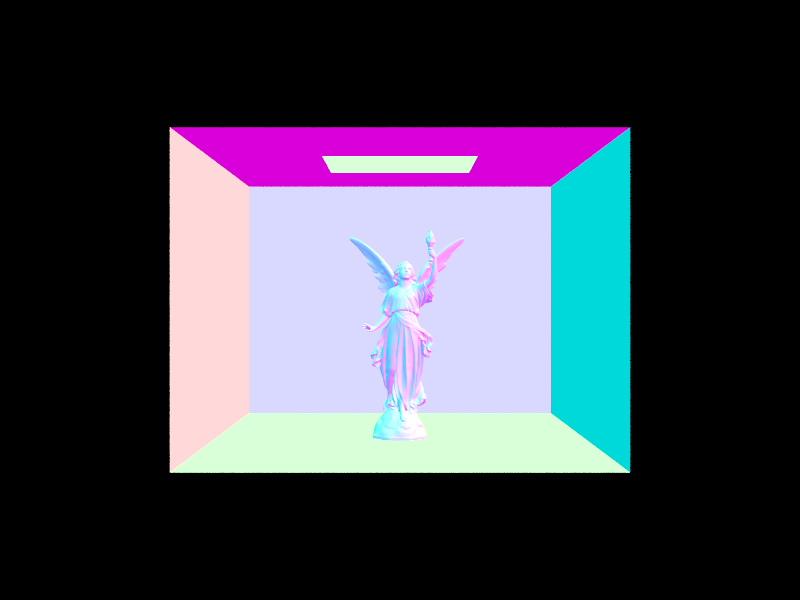
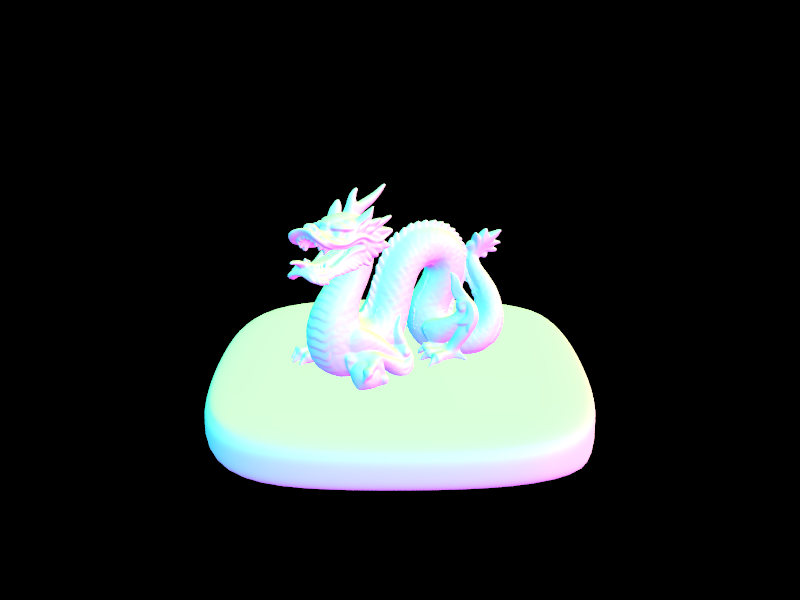
To compare times with and without BVH acceleration, we checked out to our commit with just part 1 completed. To render cow.dae without BVH acceleration, it took 43.43 seconds, and averaged 1529 intersection tests per ray. To render cow.dae
with BVH acceleration, it took 4.4 seconds, and averaged 3.67 intersection tests per ray. To render teapot.dae without BVH acceleration, it took 18.27 seconds, and averaged 628 intersection tests per ray. To render teapot.dae with BVH
acceleration, it took 3.43 seconds, and averaged 2.89 intersection tests per ray. As seen above, assuming that the runtime without BVH acceleration is linear to the number of primitives, the runtime with BVH acceleration is approximately 3 *
log_10(time_without_BVH) - in other words, the runtime with BVH acceleration is logarithmic and is therefore much faster than the naive approach.
Part 3: Direct Illumination
To handle direct lighting, we work with rays that have already intersected with an object in the scene. Thus, we know what w_out is, i.e. the ray from the intersection point out to the camera, and now we need to figure out what the ray of
light is coming in to the intersection point. For uniform hemisphere sampling, we simply sample an outgoing ray uniformly in the hemisphere above the intersection point. Since the outgoing ray direction has an object-coordinate
representation, we have to apply an object to world transformation to get the ray direction in world coordinates. We also set a non-zero minimum time to ensure the ray doesn't instantly collide with the original intersection point. Once this
ray has been constructed, we shoot it out into the scene again and see if it has any intersections. If there was, then we get the emission from that point (only contributes if the object intersected was emissive or a light source), multiply
by the BSDF for the original intersection and the cosine of the angle formed by the incoming ray and surface normal to get the final output irradiance sample. Finally, we take multiple samples based on a program argument, divide samples by
their pdf (which is simply 1/2pi), and average them.
For importance sampling of the lights, we follow a similar procedure; however, to determine the direction of the outgoing light ray, we sample a point on the light instead of a random direction on a hemisphere. Since we are doing direct
lighting, any ray that doesn't hit a light or an emissive light souce won't contribute to the output irradiance anyway, then it's just more efficient to sample the lights directly. To sample a ray from the intersection point to a light
source, we just used the methods provided on the light objects, which gave the distance and pdf as well. After constructing the ray, we still have to ensure that it doesn't intersect any other objects in between the original intersection and
the light, so we shoot out the ray again and check for any intersections between a small constant and the distance to the light minus some small constant. If no other objects were intersected, we again multiplied by the cosine of the angle
formed and the BSDF at the intersection point to get the sampled irradiance. For area light sources, we sampled n_samples times but for point light sources, we only sampled once since there's only one point on the light anyway. Then, after
dividing each sample by their pdf, we average over all the light samples we've taken.
1 sample per light4 samples per light16 samples per light
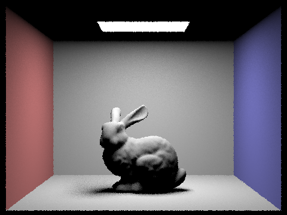
64 samples per light
From the images above, we can see that the more samples per light, the less noise there is in the shadows. For the first three images, the shadows look quite speckled, while it's less noticeable in the last image. There's still some noise
in the image though concerning the borders that is likely due to the face that there's only 1 sample per pixel in the image.
In general, uniform hemisphere sampling looks a lot noiser than light importance sampling because a lot of the random light samples don't actually hit any light sources in uniform sampling. Since light sampling specifically samples points
on the lights, we can use a lot fewer samples to generate a good looking image. Both techniques will produce good results though, if there are many many samples.
One of the main challenges we ran into for this section was figuring out which vectors needed to be changed to object coordinates and which ones needed to be changed to world coordinates. Uniform hemisphere sampling produced object-view
w_in vectors while light sampling produced world-view coordinates, and BSDF calculations needed to be in object coordinates while intersections were done in world coordinates. It was a bit challenging to figure it out, but it worked out in
the end.
Part 4: Global Illumination
For indirect lighting, we primarily relied on the implementation of an at_least_one_bounce_radiance function, which recursively simulated the way light bounces, with russian roulette to terminate a light ray at some point. If the depth of the ray was 0, then we would just return the 0 vector, as we wouldn't add to the illuminance anymore. If the depth was 1, we just returned the result of calling one_bounce_radiance. Otherwise, if we had already made one indirect bounce, we flipped a coin with probability 0.4 of returning true, and returned L_out at that point.
Otherwise, we sampled from the bsdf of the intersection and calculated the next ray given the hit point, and set the ray's min_t to be the epsilon offset, and decremented the depth so we would rech our base case. If the bvh intersected with the next ray, then we recursively called at_least_one_bounce_radiance, and added the sample * radiance from the next bounce * cosine(wi), divided by the pdf and 1 - probability_return_true (in other words, 1 - probability that russian roulette would avoid further recursive calls.
1 sample per pixel
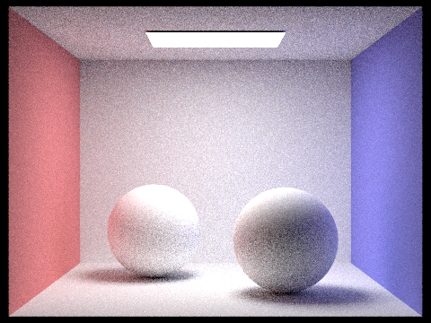
2 samples per pixel4 samples per pixel8 samples per pixel
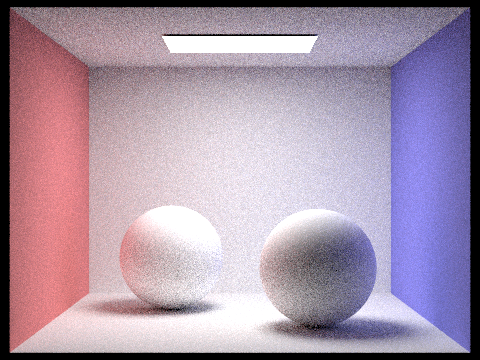
16 samples per pixel64 samples per pixel1024 samples per pixel
Part 5: Adaptive Sampling
The principle behind adaptive sampling is that not every pixel needs to be sampled the same amount. Some pixels might converge at a particular value much faster than other pixels and thus require less samples. To determine whether or not a
pixel has converged, we calculate a 95% confidence interval that the average pixel illuminance is within a certain tolerance of the sampled average. To do this, we calculate the sample mean and variance every samplesPerBatch samples and
calculate a measure I proportional to the sample variance and the inverse of the square root of the number of samples taken. This is then compared with the sample mean if it's within the threshold, and if so, we can end sampling early for
that pixel. Otherwise, we'd take a max of num_samples samples for each pixel. We don't directly use the radiance in the mean and variance calculation but instead measure the illuminance. We also had some tricks for calculating the mean and
variance using intermediate values.
One of the challenges we ran into for this section was just remembering to use the actual number of samples taken instead of num_samples for the pixel average and the rate.
Collaboration
Since this project was on the longer side, we ended up splitting up the parts; however, we still discussed our implementations so we both knew what the main ideas were. In the final stage of the project, we also met up in person to debug and
render the outputs on the instructional machines. We learned how to effectively parallel process the coding and testing/rendering process and about ways to more efficiently debug code like using the debugger.
 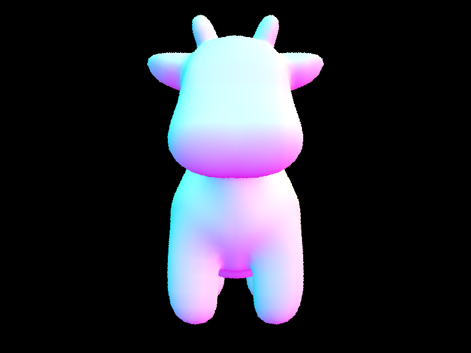
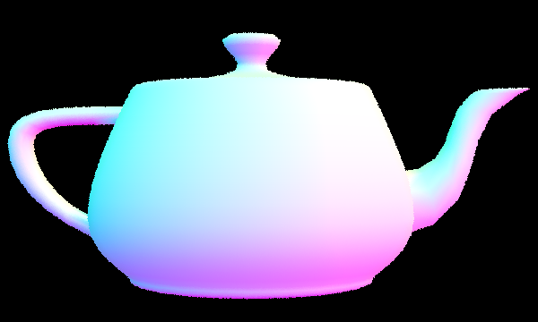
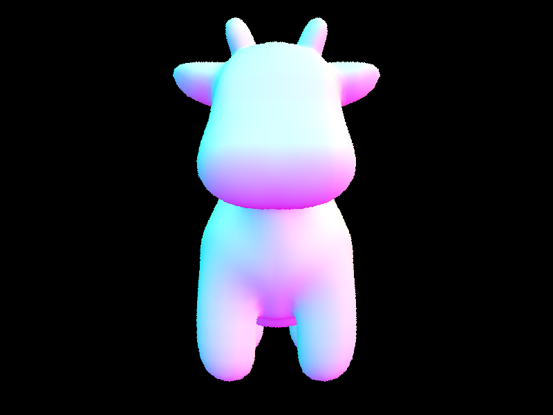
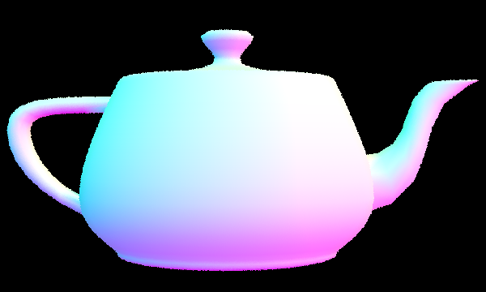